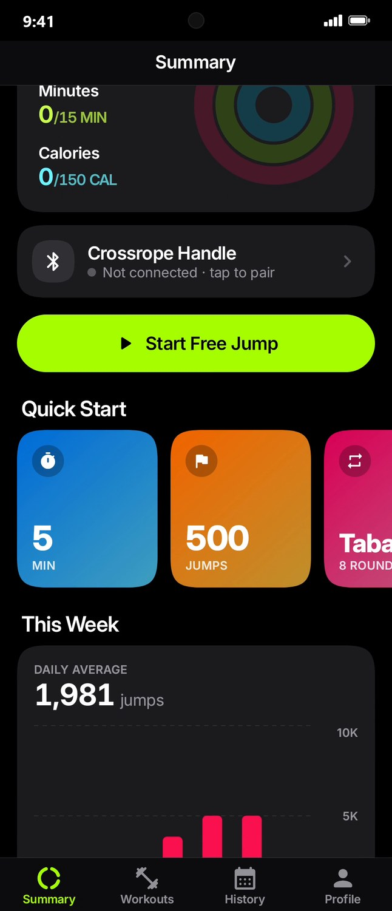
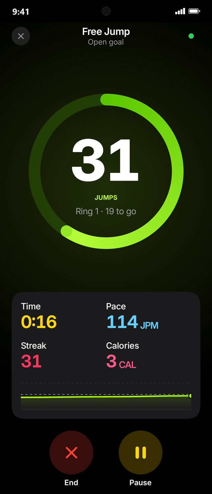

FreeRope connects to your Crossrope AMP handle and turns every session into live counts, pace charts, streaks and calories that account for your rope's weight.


Thirty seconds of FreeRope.
Everything you want to know after a session, without the subscription.
Talks straight to your handle over Bluetooth. Big, glanceable numbers mid-set, with voice cues every lap.
Built from jump rope research, your body, your pace and your rope weight. A 1 lb rope really does count for more.
Smoothed pace chart with rests shaded out. Drag across it to see your speed at any moment.
Daily goals for jumps, minutes and calories. Best streak, misses and personal bests on every workout.
Free jump, 1–20 minute timers, jump targets up to 5,000, Tabata and sprint intervals with spoken countdowns.
How long you'd need to run, cycle or swim for the same burn, and how much pizza you just earned back.
Free, and it takes about a minute.
TestFlight is Apple's own way to share apps before they're in the App Store, so there's nothing to sideload and no warnings.
That's it: a FreeRope icon on your home screen. Shake your handle to wake it and tap Connect Handle.
Save this icon to Photos. In the Shortcuts app tap + → Open URLs, paste the link below, rename it FreeRope, then use Add to Home Screen and pick the icon.
Point your phone's camera at the code to open this page there, then follow the Android or iPhone steps.
Open the web app hereThe web app runs in Chrome or Edge on Windows, Mac and Android.
FreeRope is free and stays free. Publishing it properly costs $99 a year for Apple's App Store and $25 once for Google Play. If FreeRope earns a spot in your routine, a small tip gets it into the stores (no more TestFlight, no more install warnings) and keeps updates coming.
Donate with PayPalAny amount helps. Thank you!
Yes. No ads, no account, no subscription. It's a side project shared with r/jumprope.
Crossrope AMP handles (the smart handles that count jumps). FreeRope talks to the handle directly, so you don't need the Crossrope app or a membership. Non-AMP Crossrope handles have no sensor to count with, but the demo mode still lets you look around.
Yes. It's a native iPhone app installed through TestFlight, Apple's official beta-testing app. Each TestFlight build lasts 90 days and new builds install automatically, so you just keep using it. The next step is the App Store itself.
Publishing to the stores costs $99 a year for Apple and $25 once for Google. Sharing it directly keeps it free for now. On Android you install the app file yourself; on iPhone it comes through TestFlight, Apple's beta-testing app. If enough people chip in, FreeRope goes into both stores.
Android shows the same warning for every app that doesn't come from the Play Store. FreeRope only asks for Bluetooth (to talk to your handle) and internet (only to check this site for updates). It has no account, no tracking, and your workouts never leave your phone.
From published jump rope oxygen-uptake studies and the 2024 Compendium of Physical Activities, scaled to your height, weight, age and sex. FreeRope adds the physical work of turning your rope, so heavier ropes count for more: about 11% more for a 1 lb rope than a ¼ lb one for an average adult. It's still an estimate (±10–15%), like any app without a heart-rate strap.
No. Install the new FreeRope.apk over the old one and everything stays. On iPhone, TestFlight updates keep your workouts too.
No. FreeRope is an independent fan project and isn't affiliated with or endorsed by Crossrope. Crossrope and AMP are their trademarks.